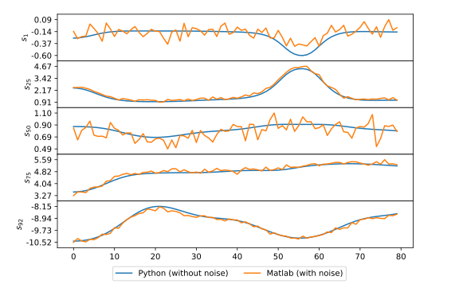
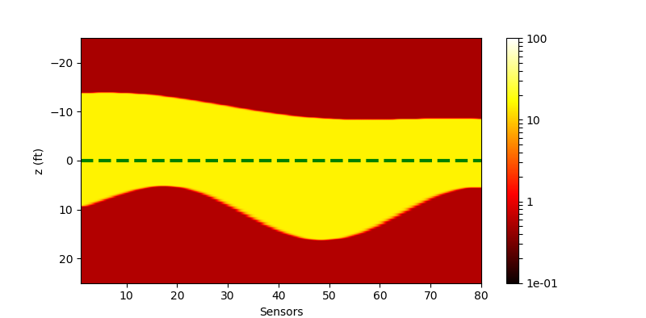

Forward Model : Curves 180602
| Date: | Jun 18, 2018 |
|---|---|
| Last Updated: | Jul 6, 2018 |
| Categories: | |
| Tags: |

Contents
C++ Migrated Project
Introduction
This is a python-c-api that wrapping the C++ forward model codes (which is supported by OpenMP) with Numpy-API. To get the C++ codes, visit the master branch:
The function prototype could be described as
float64_t *resp = curves(numLayers, Rh, Rv, Zbed, Dip, TVD);
This function is used to simulate the response of the azimuthal resistivity LWD tool. Here is the parameter list
| Parameter | Description | Range |
|---|---|---|
resp |
92-point simulated electromagnetic response (92 sensors). | - |
numLayers |
The number of layers. | - |
Rh |
Resistivities of each layer. | [0.1,1000] [ohm * m] |
Rv |
Usually the same as Rh. |
- [ohm * m] |
Zbed |
Position of the boundaries between each 2 layers. | TVD+[-100,100] [feet] |
Dip |
Dip Angle between the tool and the boundary. When 90 deg, the tool is perpendicular to the boundary. | [0, 180] [deg] |
TVD |
True vertical depth of the logging tool. | - [feet] |
Building Environment
Now we have provided the building project on both Linux and Windows. It requires:
| Windows | Linux |
|---|---|
|
|
Note that if you want to build by yourself, you need to change the include / library path in the project. Or you could download our compiled binary file in the release page.
Usage
Basic Usage
Now we support 2 kinds of basic usages. The first one is the primal API, which means the inputs and outputs are the same as that of the C++ API:
| Parameter | Description | Shape |
|---|---|---|
numLayers |
=3 | - |
Rh |
1D vector. | numLayers |
ZBed |
1D vector. | numLayers-1 |
Dip |
=90.0 | - |
TVD |
=0.0 | - |
Rv |
If not used, it would be the same as Rh. |
numLayers |
For example, if we have a 3-layer, 80-point geophysical model, which has 3 Rh value and 2 Zbed value for each point. Then the input should like this:
| Parameter | Description | Shape |
|---|---|---|
numLayers |
=3 | - |
params |
The first 3 rows are Rh for each point, and the last 2 rows are Zbed for each point. |
(2*numLayer-1)*80 |
Dip |
=90.0 (could be 1D vector now.) | - |
TVD |
=0.0 (could be 1D vector now.) | - |
withRv |
If not used, it would be False, and Rv would be set the same as Rh |
- |
The code is like this:
import fwm180602 as fwm
f = fwm.Curves()
# Prepare for params ...
resp = f.action(numLayers=3, Rh=np.array([10, 1, 10]), Zbed=np.array([-10, 10]), Dip=90, TVD=0) # Calculate for one point
resp = f.batchAction(params, numLayers=3, Dip=90, TVD=np.linspace(-10, 10, 80)) # Calculate for many points
The newest version has support OpenMP, which means the programming has been already optimized for multi-processing. We have made a simple estimation of the aid of OpenMP, the results is like the following table. These experiments are performed with 80 points on a laptop with 2 i5 cores.
| Time(s) | Primal API | Arranged API |
|---|---|---|
| with OpenMP | 3.6 | 3.6 |
| without OpenMP | 2.2 | 1.8 |
Generating Jacobian matrix
We could use the API which is similar to batchAction() to get a Jacobian matrix for one sample. A Jacobian matrix could be defined like this:
Thus we know, because we $\mathbf{y}$ is a function that could be defined as $\mathbf{y}:=\vec{y}(\mathbf{x})$, we could compute this matrix numerically by each column like this:
where $\varepsilon$ is a small value and $\mathbf{e}_i$ is a base vector with the $i^{\mathrm{th}}$ value as 1 and other values as 0.
The code is like this:
import fwm180602 as fwm
f = fwm.Curves()
J = f.jacobian(params=np.array([-0.5, 0, 1, -20.0, 20.0], dtype=np.float32), numLayers=3, Dip=90.0, TVD=0.0) # Calculate J matrix for one sample
Different from batchAction(), here we only feed one sample (1-D array) to this function, and we could get the Jacobian matrix for this sample. Since the input dimension is 5 and the output dimension is 92, the shape of J should be 5*92. Here we know that the result is the transposed Jacobian matrix actually for the convenience of using an API like what we do in Matlab. We would discuss related to this matrix later.
Because this function is only based on one-sample computing, it may not make use of full resource of the CPU. In the future we may be able to improve it by introducing a function calculating the back propagation directly.
I/O a look-up table
We also provide a high-efficient method for I/O a look-up table. For some reasons, we do not assume that the value in the table would change with Dip and TVD. To generating a look-up table, we could use code like this:
import fwm180602 as fwm
fwm.setGlobal(dumpLevel=1)
f = fwm.Curves()
# Prepare for pRange and pNum ...
f.scanSave(b's_table', pRange, pNum, 3, 90.0, 0.0)
In this case, we need to generate a 3 layer model, thus we have 5 parameters. So pRange should be a 5*2 matrix in which the first column represents the lower bound of the corresponding parameter and the second one represents the upper bound. pNum is a vector with a length of 5. It defines the number of samples of each parameter. The function would produce two files s_table.fwdp and s_table.fwdr which records the parameter table and response table respectively.
Another application is reading the look-up table. “Reading” means if we feed a group of geophysical parameters, we could get the corresponding responses, and if we feed a group of responses, we should get the parameters. This is why we call it a “look-up table”. Note that we have two files, if we call the function like this:
import fwm180602 as fwm
f = fwm.Curves()
# Prepare for params ...
t_res = f.scanRead(b's_table.fwdp', gmodel) # gmodel is a 3-layer model paremeter matrix which has a shape of 5xN
print(t_res.shape) # t_res has a shape of 92xN
Then we would use the table to simulate the forward model, the efficiency of this function is O(M) where M is the number of parameters (in this example M=5). This process is very high efficient.
If we call the function like this:
import fwm180602 as fwm
f = fwm.Curves()
# Prepare for params ...
t_model = f.scanRead(b's_table.fwdr', g_res) # g_res is a 3-layer model response matrix which has a shape of 92xN
print(t_model.shape) # t_model has a shape of 5xN
This process is a simulation of the inversion. We feed a group of responses to this function and scan the table file .fwdr to get the best indicies of corresponding parameters in .fwdp. In this example, we would get a 5*N matrix because each sample saved in s_table.fwdp has 5 parameters. If we have P samples for each parameter, the efficiency of this process should be O(P^M), which would be very time-consuming and space-consuming if we have many samples.
Global settings
Use these function to set the global parameters:
| Parameter | Description |
|---|---|
dumpLevel |
The level of dumped log. When 0, it would be silent. When 1, it would returns the iteration information. (default: 0) |
openMP |
Set the preferable number of used threads. Note that this setting may not take effect when the system has a better choice. (default: core number) |
For example, we could use these codes to change the settings after importing
import fwm180602 as fwm
fwm.setGlobal(dumpLevel=1, openMP=8)
Matlab script
Introduction
The prototype of this project is a collection of matlab scripts, which relys on the forward model for simulating the geophysical response of a multi-layer underground model. To see these code, visit this branch:
These codes contain 3 parts:
- Generating a 3-layer example model.
- Make the inversion of the model by Levenberg-Marquardt’s algorithm.
- Plot the model (including the real one and the inversed one).
The basic idea of this script is using the algorithm to optimize the mean-square loss function. We appreciate the prior work of Jiefu Chen (jiefu.chen@duke.edu) on August 20, 2010 and K. Madsen’s book. This optimization could be described as below
where we use $\mathcal{C}$ to represent the forward model. $\mathbf{p}_0$ is the synthetic ground truth (which is unknown in practice). $\boldsymbol{\rho}$ is the target model of the inversion and $\mathbf{p}$ is the result. We could see that the inversion method is abstract. It concentrates more on how to make the optimization.
Here we do not concentrate more details of the model but just show the results.
Results
The model is 3-layers, which means it has such main properties:
- The conductivity of each layer, thus we have 3 parameters.
- The position of the boundary between 2 layers, thus we have 2 parameters.
The real model generated by script_model_generator.m is as below
| Real model |
|---|
Thus we know the range of the underground stretch is (-20, 20) feets. The conductivity of each layer is 10, 50 and 1 respectively.
We use a forward model simulator to get the response of the tool along the green curve. The tool has 92 sensors so that we would get 92x80 data. The whole response is as below
| Response from all sensors |
|---|
The y-axis means the sensor. So each row is a response curve from a sensor. To see clearly, we would like to choose 6 sensors and plot their response curves as below
| Response curves from 5 sensors |
|---|
Note that these curves are with a small white noise which is aimed at simulating the interference when using the logging tool.
We could see that different sensors would get quite different response curves. The target of the inverse algorithm is just using these response to predict the original model.
Here is the model inversed by the LMA. It is produced by the code script_main.m
| Inversed model |
|---|
Due to the limitation of the algorithm and the noise, the result is slightly different from the real one. In this project, we will migrate the matlab codes to the python enviroment and try to use machine learning frame to solve it.
Numpy test for the forward model
Introduction
This is the testing for verifying the correctness of the migration for the project. To see the codes, visit this branch:
We use the model and response produced by matlab as the ground truth. Then we use the migrated python-c-api to produce the response. By confirming that the produced response is the same as that of the matlab, we could make sure that the python-c-api has been implemented correctly.
The matlab data is stored in model.mat, thus we use this code to generate the python database:
python mat2npz.py -mf model.mat
Then we could see model.npz in the folder. We could use
python test_fwd.py -m c
to see the comparison of the response from different platforms. And we could also use
python test_fwd.py -m g
to see a randomly generated model and its response.
Advanced tests
In the newest version, we improve the model by:
- Enable the OpenMP support correctly.
- Support the primal API, now we could use both
actionandbatchActionto call the primal API and the arranged API respectively. The arranged API could make use of the computing resource more efficiently. - Enable the
batchActionto accept variableDipandTVD. We have a test to show the improvement. - Support the numerical computation of Jacobian matrix.
- Fix the memory leaking problem.
To test the primal API version of the comparison script, use
python test_fwd.py -m sc
the results would be totally the same as that in the mode of -m c. But we could verify that this version is slower.
To test the variable tool trace, use
python test_fwd.py -m vg
To check the results of Jacobian matrices for the first 16 samples, use
python test_fwd.py -m j
To compare the gradients computed by direct computation and Jacobian matrix respectively, use
python test_fwd.py -m cj
To check whether the memory leaking problem has beed fixed, use
python test_fwd.py -m tm
This test is realized by just repeating the forward model calculation by 100 times.
Result
We have migrated the script for displaying the model in python. The figure below is produced by python, thus we could verify that the underground model is the same as that in matlab.
| Real model displayed in Python |
|---|
Then we would like to compare the output response of python-c-api and matlab-c-api. The results are as below:
| Compared forward model response |
|---|
The results are almost the same. The slight difference is caused by a small noise added to the response when we get it in matlab. To see the difference more clearly, we would still choose some samples to see the curves.
| Compared forward model response (selective) |
|---|
|  |
Note that if we calculate the results with the primal API and over all points separately, we could get such results:
| The response of generated random model (primal API) |
|---|
The result is totally the same as that of the arranged API.
Here we show the Jacobian matrices from the first 16 samples. We use column to represent the output dimension and row to represent the input dimension. Since we have 5 inputs and 92 outputs for each sample, the result has a shape of $80 \times 92$.
| Stacked Jacobian matrices for 16 samples |
|---|
According to the theory, if we has an input vector $\mathbf{x}$ and an output vector $\mathbf{y}$, and we use $f$ to map $\mathbf{y}$ into a single loss value, then we could know that
where $\mathbf{x}$ and $\mathbf{y}$ are row vectors, $\mathbf{J}$ is the Jacobian matrix with a shape of $N \times M$ ($M,~N$ are the lengths of $\mathbf{x}$ and $\mathbf{y}$ respectively).
Like what we have done in $\eqref{fml:sec1:jacobianrow}$, we could also compute the gradient directly,
Compared with $\eqref{fml:sec4:gradjacob}$, we have two ways to get the gradient. The results are like this:
| Gradient computed by different methods |
|---|
We use row to represent the axis of $\mathbf{x}$, and the column is used to represent different samples (80 samples). Note that although the results are almost the same, Jacobian method could reach a higher precision and a higher efficiency, the consumed time and precision are as below,
| Direct computing | Jacobian method | |
|---|---|---|
| Consumed time | 37.2943s | 14.9083s |
| Precision | 1e-4 | 1e-8 |
Random model generator
We also write a script to produce a random geophysical model. We select the resistivities of each layer by uniform distribution. And we generate the upper boundaries and lower boundaries by using a composition of several trigonometric functions with different frequencies, different amplitudes and different phases. Here we show one of the result:
| The generated random model |
|---|
|  |
And its responsed from the forward model is
| The response of generated random model |
|---|
Variable tool trace
We assuming that the dip angle is about 60 degree compared to the ZBed. The logging tool is going down during the whole time. The produced model would be like this
| The generated random model with Dip and TVD changing |
|---|
The response is like this
| The response of generated random model (with a different tool trace) |
|---|
Numpy test for the inversion
We have migrated the LMA from matlab to python, too. By using the newest forward model API, we could use multi-processing package in python to calculating the optimization for different points within different processes. Use this command to test it:
python test_lma.py -m m
where when --mode(-m) is m, we use the multi-processing mode; when --mode(-m) is s, we use the single-processing mode. We have run the test on a laptop with 2 i5 cores. The consumed time is as below:
| Single-processing | Multi-processing |
|---|---|
| 640s | 516s |
In fact, we have improved the optimization method during single-processing, i.e. we use the optimized result of the former sample as the initialized value of the next optimization. This trick is based on the assumption of the continuity of the geophysical features. By this improvement the time consumed on single thread has been reduced to 146s.
We could confirm that multi-processing could accelerate the computing, although the infrastructure of the forward model is supported by OpenMP. The results of the inversion is as below
| Single-processing | Multi-processing |
|---|---|
 |
Note that the results look better than that from matlab, because we use a different scheme to set the input parameter. In the matlab script, all Rh and ZBed are logarithmic during the inversion, however here we only let Rh to be logarithmic, which makes the ZBed more stable.